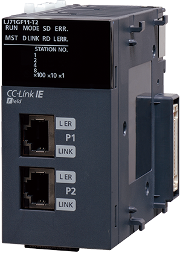
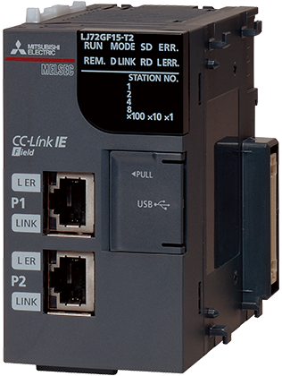
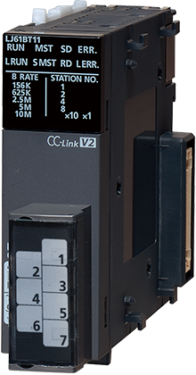
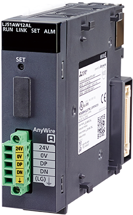
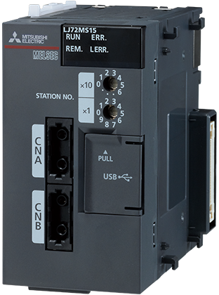
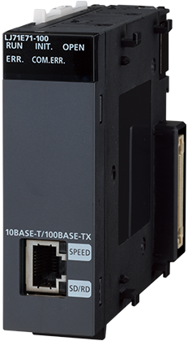
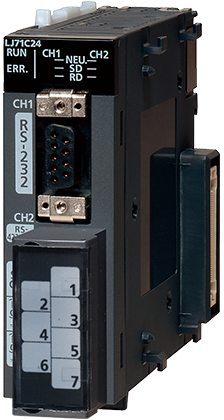
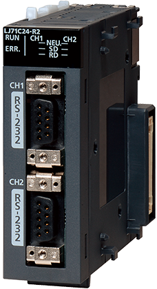

Controllers MELSEC-L Series
Fitur Produk -Jaringan-

Modul Master/Lokal Jaringan Lapangan CC-Link IE
CC-Link IE Field
CC-Link IE Field

CC-Link IE Field Master/stasiun lokal
Kecepatan komunikasi: 1 Gbps
I/O jarak jauh: 16384 poin
Register jarak jauh: 8192 kata
Didukung oleh CPU yang lima digit nomor seri pertamanya adalah “13012” atau yang lebih baru.
Modul Kepala Jaringan Lapangan CC-Link IE
CC-Link IE Field
CC-Link IE Field

Stasiun perangkat cerdas CC-Link IE Field
Kecepatan komunikasi: 1 Gbps
I/O jarak jauh: 2048 titik
Registrasi jarak jauh: 1024 kata
Fungsi RAS
Penutup END disertakan.
Modul Master/Lokal CC-Link
CC-Link
CC-Link

Stasiun induk/lokal CC-Link
Kecepatan komunikasi maks.: 10 Mbps
I/O jarak jauh: 8192 titik*1
Register jarak jauh: 2048 kata*1

1. Titik tautan untuk stasiun induk CC-Link Ver.2.0
Modul Master AnyWireASLINK
AnyWireASLINK
AnyWireASLINK

DB
Stasiun induk AnyWireASLINK
Jarak transmisi: Maks. 200 m
Data I/O: Maks. 512 titik*2
Jumlah stasiun yang terhubung: Maks. 128 modul

2. 256 titik masukan/256 titik keluaran
DB
Produk bermerek ganda
Spesifikasi umum dan ketentuan jaminan produk dari produk yang dikembangkan bersama berbeda dengan produk MELSEC.
Untuk informasi lebih lanjut, silakan lihat manual produk atau hubungi perwakilan Mitsubishi setempat untuk keterangan lebih lanjut.
Modul Kepala SSCNETⅢ/H
SSCNETⅢ/H
SSCNETⅢ/H

Stasiun jarak jauh SSCNETⅢ/H
Kecepatan komunikasi: 150 Mbps

Penutup END disertakan.
Modul Antarmuka Ethernet
Ethernet
Ethernet

Kecepatan komunikasi: 100 Mbps/10 Mbps
Koneksi MELSOFT
Komunikasi SLMP (protokol MC)
Fungsi dukungan protokol yang telah ditentukan sebelumnya
Fungsi email
Fungsi web

Modul Komunikasi Serial
RS-232, RS-422/485
RS-232, RS-422/485

Kecepatan komunikasi maks.: 230,4 kbps*3
Komunikasi protokol MC
Fungsi dukungan protokol yang telah ditentukan sebelumnya

3. Hanya tersedia untuk saluran 1
RS-232
RS-232

Kecepatan komunikasi maks.: 230,4 kbps*4
Komunikasi protokol MC
Fungsi dukungan protokol yang telah ditentukan sebelumnya

4. Hanya tersedia untuk saluran 1